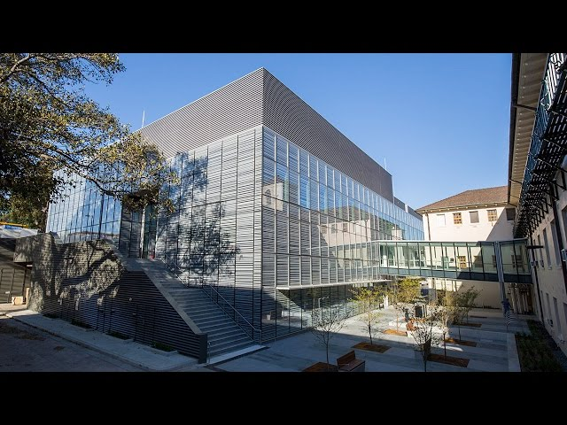

Statistical Mechanics of Soft Matter 2017
The Fourth SM2 Meeting will be held at the University of Sydney on Monday Nov. 27 and Tuesday Nov. 28 2017.
SM2 is a local discussion meeting on the theme of Statistical Mechanics of Soft Matter. The aim is to discuss fundamentals and applications of equilibrium and non-equilibrium statistical mechanics. We are particularly interested in computational statistical mechanics relating to simple and complex liquids, polymers, biological materials and other forms of soft matter.
The meeting will consist of a single stream of talks and a poster session; when registering please indicate whether you would prefer to give a talk or present a poster.
Registration is free but essential. The deadline for registration is November 3, 2017; if you plan to make a presentation you must provide a title and abstract prior to this date.
There will be a conference dinner on the evening of Monday, November 27.
Update: The programme is now available, together with a full list of participants.
Registration
Registration for SM2 2017 has closed. If you still wish to attend please contact the organisers at the conference email address: smsq.meeting@gmail.com.
Associated events
The SM2 Meeting is being held in conjunction with the following two related meetings at the University of Sydney.
The 9th Australian-Korean Rheology Conference, 29 Nov. to 1st Dec, 2017. For more information, please go to https://akrc2017.eventbrite.com.au
The first Mini Statistical Mechanics Summer School will be held from 29-30 Nov. 2017. This school will cover two areas - free energy methods (Wed 29th) and techniques for studying non-equilibrium systems (Thur 30th) - and will consist of lectures in the morning (with time for discussion) and practical group exercises in the afternoon. For more information, please contact Dr Asaph Widmer-Cooper asaph.widmer-cooper@sydney.edu.au. Students should register at https://docs.google.com/spreadsheets/d/1NajxGKzcYmvHLLHH8Cg-jBZhd6m36yOeg-zKHYT1cBA/edit?usp=sharing.
Organisers
| Peter Harrowell | University of Sydney |
| Ahmad Jabbarzadeh | University of Sydney |
| Nathan Clisby (webmaster) | Swinburne University of Technology |
| Conference email: | smsq.meeting@gmail.com |
Local information
Venue
Messel Lecture Theatre in the Sydney Nanoscience Hub (Bldg. A31) at the University of Sydney http://sydney.edu.au/maps/campuses/?area=CAMDAR
|
 |
| Sydney Nanoscience Hub, University of Sydney. |
Transport
The University of Sydney is easily accessible by public transport (bus and train). For travelling on public transport in Sydney you will need to purchase an Opal card from a newsagent.Accommodation
The following hotels are all within 20 mins walk of the Sydney University campus and provide easy access to the restaurants of Newtown, Glebe and Ultimo.| Adina Apartment Hotel, Chippendale |
| Alishan International Guest House, Glebe |
| Rydges, Camperdown |
| Rendezvous Hotel, Central Station |
| Veriu, Camperdown |
| Vulcan Hotel, Ultimo |
| Waldorf Serviced Apartments, Chippendale |
Sponsors
| School of Chemistry, University of Sydney |